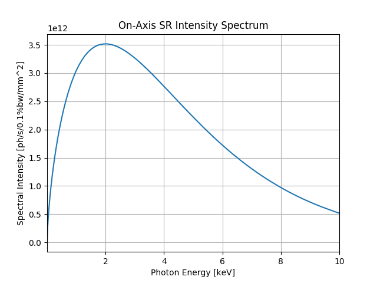
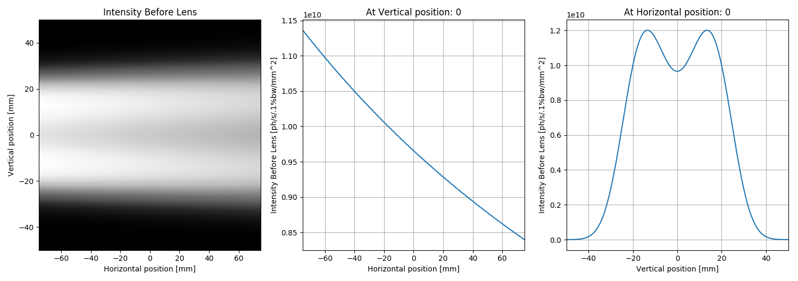
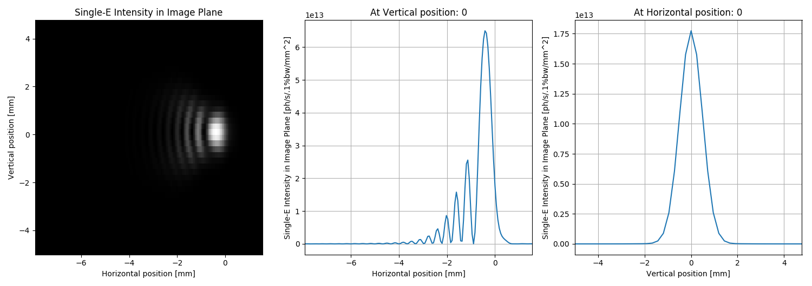
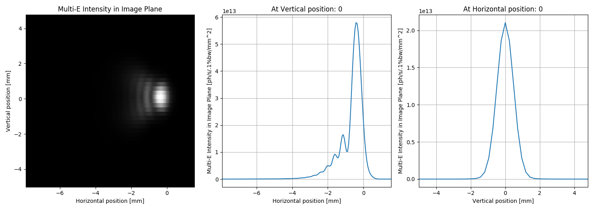

Note
Click here to download the full example code
SRW Example #13¶
Problem¶
Simulating emission and propagation of Bending Magnet SR through a simple optical scheme containing one focusing element
Example Solution¶
- 
- 
- 
- 
Out:
SRWLIB Python Example # 13:
Simulating emission and propagation of Bending Magnet Synchrotron Radiaiton wavefront through a simple beamline
Performing initial SR spectrum calculation ... done in 0 s
Extracting intensity and saving it to a file ... done in 0 s
Performing initial electric field wavefront calculation ... done in 9 s
Extracting intensity and saving it to a file ... done in 0 s
Simulating single-electron electric field wavefront propagation ... done in 2 s
Extracting intensity from calculated electric field and saving it to file(s) ... done in 0 s
from __future__ import print_function #Python 2.7 compatibility
from srwpy.srwlib import *
from srwpy.uti_plot import * #required for plotting
import time
print('SRWLIB Python Example # 13:')
print('Simulating emission and propagation of Bending Magnet Synchrotron Radiaiton wavefront through a simple beamline')
#***********Data Folder and File Names
strExDataFolderName = 'data_example_13' #example data sub-folder name
strSpecOutFileName0 = 'ex13_res_spec.dat' #file name for output SR spectrum vs photon energy data
strIntOutFileName0 = 'ex13_res_int_se.dat' #file name for output initial single-electron SR intensity vs X and Y data
strIntOutFileName1 = 'ex13_res_int_prop_se.dat' #file name for output propagated single-electron SR intensity vs X and Y data
strIntOutFileName2 = 'ex13_res_int_prop_me.dat' #file name for output propagated multi-electron SR intensity vs X and Y data
#***********Bending Magnet
B = 0.4 #Dipole magnetic field [T]
LeffBM = 4. #Magnet length [m] (exaggerated, to avoid observinng eventual "edge radiation")
BM = SRWLMagFldM(B, 1, 'n', LeffBM)
magFldCnt = SRWLMagFldC([BM], [0], [0], [0]) #Container of magnetic field elements and their positions in 3D
#***********Electron Beam
eBeam = SRWLPartBeam()
eBeam.Iavg = 0.5 #Average current [A]
#1st order statistical moments:
eBeam.partStatMom1.x = 0. #Initial horizontal position of central trajectory [m]
eBeam.partStatMom1.y = 0. #Initial vertical position of central trajectory [m]
eBeam.partStatMom1.z = 0. #Initial longitudinal position of central trajectory [m]
eBeam.partStatMom1.xp = 0. #Initial horizontal angle of central trajectory [rad]
eBeam.partStatMom1.yp = 0. #Initial vertical angle of central trajectory [rad]
eBeam.partStatMom1.gamma = 3./0.51099890221e-03 #Relative energy
#2nd order statistical moments:
eBeam.arStatMom2[0] = (127.346e-06)**2 #<(x-x0)^2> [m^2]
eBeam.arStatMom2[1] = -10.85e-09 #<(x-x0)*(x'-x'0)> [m]
eBeam.arStatMom2[2] = (92.3093e-06)**2 #<(x'-x'0)^2>
eBeam.arStatMom2[3] = (13.4164e-06)**2 #<(y-y0)^2>
eBeam.arStatMom2[4] = 0.0072e-09 #<(y-y0)*(y'-y'0)> [m]
eBeam.arStatMom2[5] = (0.8022e-06)**2 #<(y'-y'0)^2>
eBeam.arStatMom2[10] = (0.89e-03)**2 #<(E-E0)^2>/E0^2
#***********Radiation Sampling for the On-Axis SR Spectrum
wfrSp = SRWLWfr() #Wavefront structure (placeholder for data to be calculated)
wfrSp.allocate(500, 1, 1) #Numbers of points vs photon energy, horizontal and vertical positions (the last two will be modified in the process of calculation)
wfrSp.mesh.zStart = 5. #Longitudinal position for initial wavefront [m]
wfrSp.mesh.eStart = 0.1 #Initial photon energy [eV]
wfrSp.mesh.eFin = 10000. #Final photon energy [eV]
wfrSp.mesh.xStart = 0. #Initial horizontal position [m]
wfrSp.mesh.xFin = wfrSp.mesh.xStart #Final horizontal position [m]
wfrSp.mesh.yStart = 0. #Initial vertical position [m]
wfrSp.mesh.yFin = 0. #Final vertical position [m]
wfrSp.partBeam = eBeam #e-beam data is contained inside the wavefront struct
#***********Radiation Sampling for the Initial Wavefront (before first optical element)
wfr = SRWLWfr() #Wavefront structure (placeholder for data to be calculated)
wfr.allocate(1, 10, 10) #Numbers of points vs photon energy, horizontal and vertical positions (the last two will be modified in the process of calculation)
distSrcLens = 5. #Distance from geometrical source point to lens [m]
wfr.mesh.zStart = distSrcLens #Longitudinal position for initial wavefront [m]
wfr.mesh.eStart = 0.123984 #Initial photon energy [eV]
#Calculations in this script were tested for photon energies between ~0.0124 and ~0.124 eV (~100 and ~10 microns respectively)
wfr.mesh.eFin = wfr.mesh.eStart #Final photon energy [eV]
horAng = 0.03 #Horizontal angle [rad]
wfr.mesh.xStart = -0.5*horAng*distSrcLens #Initial horizontal position [m]
wfr.mesh.xFin = 0.5*horAng*distSrcLens #Final horizontal position [m]
verAng = 0.02 #Vertical angle [rad]
wfr.mesh.yStart = -0.5*verAng*distSrcLens #Initial vertical position [m]
wfr.mesh.yFin = 0.5*verAng*distSrcLens #Final vertical position [m]
wfr.partBeam = eBeam #e-beam data is contained inside the wavefront struct
#***********Optical Elements and their Corresponding Propagation Parameters
distLensImg = distSrcLens #Distance from lens to image plane
focLen = wfr.mesh.zStart*distLensImg/(distSrcLens + distLensImg)
optLens = SRWLOptL(_Fx=focLen, _Fy=focLen) #Thin lens
optDrift = SRWLOptD(distLensImg) #Drift space from lens to image plane
#Propagation paramaters (SRW specific)
# [0][1][2] [3][4] [5] [6] [7] [8]
propagParLens = [1, 1, 1., 0, 0, 1., 2., 1., 2., 0, 0, 0]
propagParDrift = [1, 1, 1., 0, 0, 1., 1., 1., 1., 0, 0, 0]
#Wavefront Propagation Parameters:
#[0]: Auto-Resize (1) or not (0) Before propagation
#[1]: Auto-Resize (1) or not (0) After propagation
#[2]: Relative Precision for propagation with Auto-Resizing (1. is nominal)
#[3]: Allow (1) or not (0) for semi-analytical treatment of the quadratic (leading) phase terms at the propagation
#[4]: Do any Resizing on Fourier side, using FFT, (1) or not (0)
#[5]: Horizontal Range modification factor at Resizing (1. means no modification)
#[6]: Horizontal Resolution modification factor at Resizing
#[7]: Vertical Range modification factor at Resizing
#[8]: Vertical Resolution modification factor at Resizing
#[9]: Type of wavefront Shift before Resizing (not yet implemented)
#[10]: New Horizontal wavefront Center position after Shift (not yet implemented)
#[11]: New Vertical wavefront Center position after Shift (not yet implemented)
#"Beamline" - Container of optical elements (together with their corresponding wavefront propagation parameters / instructions)
optBL = SRWLOptC([optLens, optDrift], [propagParLens, propagParDrift])
#***********BM SR Calculation
#Precision parameters
meth = 2 #SR calculation method: 0- "manual", 1- "auto-undulator", 2- "auto-wiggler"
relPrec = 0.005 #Relative precision
zStartInteg = 0 #Longitudinal position to start integration (effective if < zEndInteg)
zEndInteg = 0 #Longitudinal position to finish integration (effective if > zStartInteg)
npTraj = 20000 #Number of points for trajectory calculation
useTermin = 1 #Use "terminating terms" (i.e. asymptotic expansions at zStartInteg and zEndInteg) or not (1 or 0 respectively)
print(' Performing initial SR spectrum calculation ... ', end='')
t0 = time.time()
sampFactNxNyForProp = -1 #Sampling factor for adjusting nx, ny (effective if > 0)
arPrecSR = [meth, relPrec, zStartInteg, zEndInteg, npTraj, useTermin, sampFactNxNyForProp]
srwl.CalcElecFieldSR(wfrSp, 0, magFldCnt, arPrecSR) #Calculating electric field
print('done in', round(time.time() - t0), 's')
print(' Extracting intensity and saving it to a file ... ', end='')
t0 = time.time()
meshSp = deepcopy(wfrSp.mesh)
arSp = array('f', [0]*meshSp.ne) #"Flat" array to take 1D intensity data (vs E)
srwl.CalcIntFromElecField(arSp, wfrSp, 6, 0, 0, meshSp.eStart, 0, 0) #Extracting intensity vs photon energy
srwl_uti_save_intens_ascii(arSp, meshSp, os.path.join(os.getcwd(), strExDataFolderName, strSpecOutFileName0))
print('done in', round(time.time() - t0), 's')
print(' Performing initial electric field wavefront calculation ... ', end='')
t0 = time.time()
sampFactNxNyForProp = 0.8 #Sampling factor for adjusting nx, ny (effective if > 0)
arPrecSR = [meth, relPrec, zStartInteg, zEndInteg, npTraj, useTermin, sampFactNxNyForProp]
srwl.CalcElecFieldSR(wfr, 0, magFldCnt, arPrecSR) #Calculating electric field
print('done in', round(time.time() - t0), 's')
print(' Extracting intensity and saving it to a file ... ', end='')
t0 = time.time()
mesh0 = deepcopy(wfr.mesh)
arI0 = array('f', [0]*mesh0.nx*mesh0.ny) #"Flat" array to take 2D intensity data (vs X & Y)
srwl.CalcIntFromElecField(arI0, wfr, 6, 0, 3, mesh0.eStart, 0, 0) #Extracting intensity vs horizontal and vertical positions
srwl_uti_save_intens_ascii(arI0, mesh0, os.path.join(os.getcwd(), strExDataFolderName, strIntOutFileName0))
print('done in', round(time.time() - t0), 's')
#***********Wavefront Propagation
print(' Simulating single-electron electric field wavefront propagation ... ', end='')
t0 = time.time()
srwl.PropagElecField(wfr, optBL)
print('done in', round(time.time() - t0), 's')
print(' Extracting intensity from calculated electric field and saving it to file(s) ... ', end='')
t0 = time.time()
mesh1 = deepcopy(wfr.mesh)
arI1s = array('f', [0]*mesh1.nx*mesh1.ny) #"Flat" array to take 2D single-electron intensity data (vs X & Y)
srwl.CalcIntFromElecField(arI1s, wfr, 6, 0, 3, mesh1.eStart, 0, 0) #Extracting single-electron intensity vs X & Y
srwl_uti_save_intens_ascii(arI1s, mesh1, os.path.join(os.getcwd(), strExDataFolderName, strIntOutFileName1))
arI1m = deepcopy(arI1s) #"Flat" array to take 2D multi-electron intensity data (vs X & Y)
srwl.CalcIntFromElecField(arI1m, wfr, 6, 1, 3, mesh1.eStart, 0, 0) #Calculating multi-electron intensity vs X & Y using convolution method (assuming it to be valid!)
srwl_uti_save_intens_ascii(arI1m, mesh1, os.path.join(os.getcwd(), strExDataFolderName, strIntOutFileName2))
print('done in', round(time.time() - t0), 's')
#***********Plotting the Calculation Results
uti_plot1d(arSp, [meshSp.eStart, meshSp.eFin, meshSp.ne], labels=('Photon Energy', 'Spectral Intensity', 'On-Axis SR Intensity Spectrum'), units=['eV', 'ph/s/0.1%bw/mm^2'])
unitsIntPlot = ['m', 'm', 'ph/s/.1%bw/mm^2']
uti_plot2d1d(arI0, [mesh0.xStart, mesh0.xFin, mesh0.nx], [mesh0.yStart, mesh0.yFin, mesh0.ny], labels=('Horizontal position', 'Vertical position', 'Intensity Before Lens'), units=unitsIntPlot)
uti_plot2d1d(arI1s, [mesh1.xStart, mesh1.xFin, mesh1.nx], [mesh1.yStart, mesh1.yFin, mesh1.ny], labels=('Horizontal position', 'Vertical position', 'Single-E Intensity in Image Plane'), units=unitsIntPlot)
uti_plot2d1d(arI1m, [mesh1.xStart, mesh1.xFin, mesh1.nx], [mesh1.yStart, mesh1.yFin, mesh1.ny], labels=('Horizontal position', 'Vertical position', 'Multi-E Intensity in Image Plane'), units=unitsIntPlot)
uti_plot_show() #show all graphs (blocks script execution; close all graph windows to proceed)
Total running time of the script: ( 0 minutes 12.963 seconds)